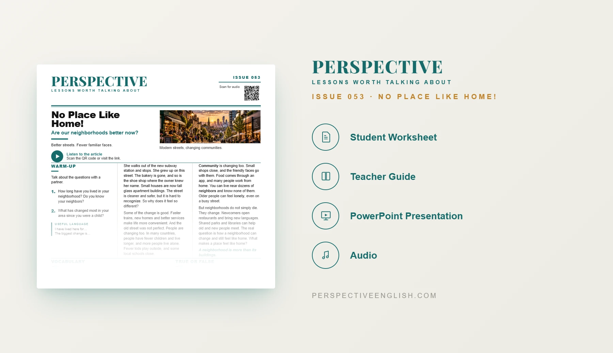

ISSUE 053
No Place Like Home! ESL Lesson
Are our neighborhoods better now?
A ready-to-teach A1–A2 ESL lesson exploring how neighborhoods change, why familiar places disappear, and how communities can grow while still feeling like home.
CHOOSE YOUR LEVEL
Also available in Collection 10, featuring Issues 051–055.
LESSON PREVIEW

ABOUT THIS LESSON
About This Neighborhood Change ESL Lesson
Neighborhoods change as new subway stations, apartments and shops appear. This A1–A2 ESL lesson asks whether these changes make life better and why a familiar street can start to feel different.
Students read about improved transport and services, closed local shops, people living alone and the importance of shared spaces. They explore how parks, libraries and new neighbors can help a community feel connected.
Students discuss the places they love, consider who gains and loses when an old market is redeveloped, role-play a conversation between new and longtime neighbors, and write about what makes a place feel like home.
FROM THE ARTICLE
WHAT'S INCLUDED
What's Included in No Place Like Home!?
- Magazine-style A1–A2 ESL student worksheet
- Accessible reading and matching audio about changing neighborhoods, new services and community life
- Five vocabulary words (neighbor, recognize, community, convenient, lonely) and five true-or-false comprehension questions
- Five discussion questions about favorite places, closed shops, neighbors and what makes somewhere feel like home
- Through Their Eyes: explore what five people gain and lose when an old market is redeveloped
- Language in Context: complete five sentences using the lesson vocabulary
- Speaking challenge: role-play a new resident and a longtime neighbor discussing three important local places
- 60–100 word opinion-writing task about whether a neighborhood can change and still feel like home
- Teacher guide, complete answer key and model writing
- Ready-to-use classroom presentation
GET THE COMPLETE LESSON
Ready to Teach No Place Like Home!?
Get the complete No Place Like Home! ESL lesson individually, or get Issues 051–055 together in Collection 10.
Secure checkout and instant digital delivery through Payhip.